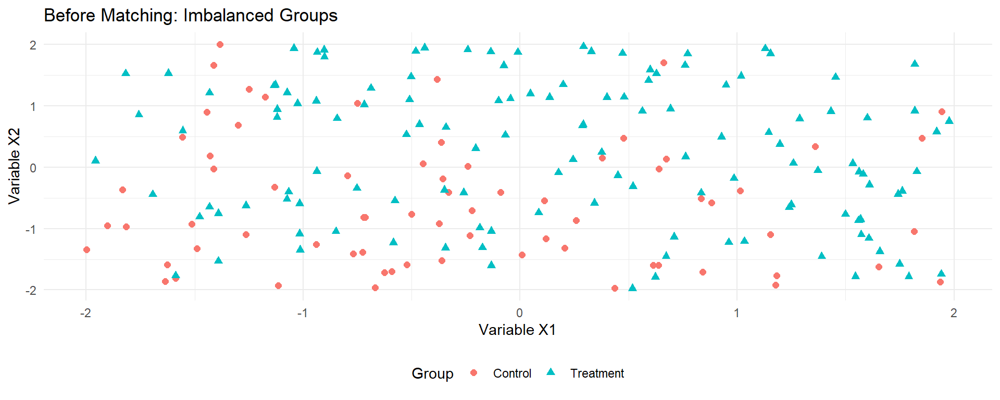
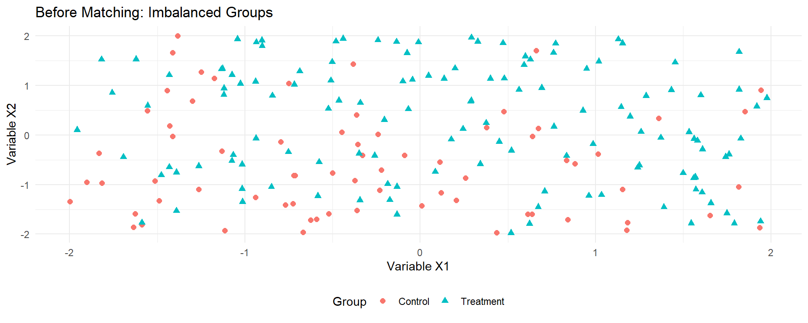

Econometrics with R

Problem: Selection bias
Solution: Matching
Converting from long to wide format:
# Create a wide-format dataset
df_w <- df %>%
# Then create wide format
pivot_wider(
id_cols = c(zone_identifier, facility_identifier, treatment_zone,
promotion_zone, eligible, enrolled, enrolled_rp),
names_from = round, # variable that determines new columns
# variables that should be made "wide"
values_from = c(waste_management_costs,
efficiency_index, age_manager, age_deputy,
educ_manager, educ_deputy, female_manager,
foreign_owned, staff_size, advanced_filtration,
water_treatment_system, facility_area,
recycling_center_distance, recycling_compliance)) %>%
# remove the industries that has missing values
# as missing values are not allowed when using matchit
filter(!is.na(waste_management_costs_0))
# Also check the first few rows to confirm format
head(select(df_w, facility_identifier, enrolled,
waste_management_costs_0, waste_management_costs_1))# A tibble: 6 × 4
facility_identifier enrolled waste_management_costs_0 waste_management_costs_1
<int> <int> <dbl> <dbl>
1 5 1 15185. 19581.
2 11 1 13076. 2399.
3 13 1 15286. 0
4 16 1 11312. 20027.
5 21 1 11224. 16665.
6 22 1 8877. 116.Two scenarios for predicting enrollment:
# Limited set of variables
psm_r <- matchit(enrolled ~ age_manager_0 + educ_manager_0,
data = df_w %>% dplyr::select(-recycling_compliance_0,
-recycling_compliance_1),
distance = "glm",
link = "probit")
# Full set of variables
psm_ur <- matchit(enrolled ~ age_manager_0 + educ_manager_0 +
age_deputy_0 + educ_deputy_0 +
female_manager_0 + foreign_owned_0 + staff_size_0 +
advanced_filtration_0 + water_treatment_system_0 +
facility_area_0 + recycling_center_distance_0,
data = df_w %>% dplyr::select(-recycling_compliance_0,
-recycling_compliance_1),
distance = "glm",link = "probit")# Create a model summary table
modelsummary(list("Limited Set" = psm_r$model,
"Full Set" = psm_ur$model),
coef_map = c('age_manager_0' = "Age (Manager) at Baseline",
'educ_manager_0' = "Education (Manager) at Baseline",
'age_deputy_0' = "Age (Deputy) at Baseline",
'educ_deputy_0' = "Education (Deputy) at Baseline",
'female_manager_0' = "Female Manager at Baseline",
'foreign_owned_0' = "Foreign Owned at Baseline",
'staff_size_0' = "Number of Staff at Baseline",
'advanced_filtration_0' = "Advanced Filtration at Baseline",
'water_treatment_system_0' = "Water Treatment System at Baseline",
'facility_area_0' = "Facility Area at Baseline",
'recycling_center_distance_0' = "Distance From Recycling Center"),
title = "Estimating the Propensity Score Based on Baseline Characteristics")| Limited Set | Full Set | |
|---|---|---|
| Age (Manager) at Baseline | -0.021 | -0.013 |
| (0.001) | (0.002) | |
| Education (Manager) at Baseline | -0.041 | -0.022 |
| (0.006) | (0.006) | |
| Age (Deputy) at Baseline | -0.008 | |
| (0.002) | ||
| Education (Deputy) at Baseline | -0.016 | |
| (0.007) | ||
| Female Manager at Baseline | -0.020 | |
| (0.051) | ||
| Foreign Owned at Baseline | 0.161 | |
| (0.031) | ||
| Number of Staff at Baseline | 0.119 | |
| (0.007) | ||
| Advanced Filtration at Baseline | 0.376 | |
| (0.031) | ||
| Water Treatment System at Baseline | -0.125 | |
| (0.029) | ||
| Facility Area at Baseline | -0.028 | |
| (0.005) | ||
| Distance From Recycling Center | 0.002 | |
| (0.000) | ||
| Num.Obs. | 9913 | 9913 |
| F | 211.015 | 89.077 |
| RMSE | 0.45 | 0.43 |
Let’s plot the distribution of propensity scores by enrollment status:
# Add propensity scores to our dataset
df_w <- df_w %>%
mutate(ps_ur = psm_ur$model$fitted.values)
# Plot the distribution
df_w %>%
mutate(enrolled_lab = ifelse(enrolled == 1, "Enrolled", "Not Enrolled")) %>%
ggplot(aes(x = ps_ur,
group = enrolled_lab, colour = enrolled_lab, fill = enrolled_lab)) +
geom_density(alpha = 0.2) +
xlab("Propensity Score") +
labs(title = "Distribution of Propensity Score by Enrollment Status") +
scale_fill_viridis_d("Status:", end = 0.7) +
scale_colour_viridis_d("Status:", end = 0.7) +
theme_minimal() +
theme(legend.position = "bottom")kableExtra::kable(summary(psm_ur)$sum.all,
caption = "Balance Before Matching") %>%
kable_styling(font_size = 10)| Means Treated | Means Control | Std. Mean Diff. | Var. Ratio | eCDF Mean | eCDF Max | Std. Pair Dist. | |
|---|---|---|---|---|---|---|---|
| distance | 0.3694119 | 0.2683525 | 0.7780852 | 0.8189848 | 0.2003240 | 0.3118783 | NA |
| age_manager_0 | 41.6565796 | 48.1384372 | -0.4731180 | 0.7797904 | 0.0881294 | 0.2074113 | NA |
| educ_manager_0 | 2.9711803 | 2.7744736 | 0.0742925 | 0.8959873 | 0.0218441 | 0.0622731 | NA |
| age_deputy_0 | 36.8363698 | 41.6117427 | -0.4098452 | 0.8042407 | 0.0647834 | 0.2100395 | NA |
| educ_deputy_0 | 2.7032726 | 2.5810189 | 0.0494165 | 0.9256881 | 0.0141252 | 0.0689847 | NA |
| female_manager_0 | 0.0732119 | 0.1100878 | -0.1415669 | NA | 0.0368759 | 0.0368759 | NA |
| foreign_owned_0 | 0.4291498 | 0.3203339 | 0.2198503 | NA | 0.1088159 | 0.1088159 | NA |
| staff_size_0 | 5.7699055 | 4.9263203 | 0.4225943 | 0.8029708 | 0.0651539 | 0.1833283 | NA |
| advanced_filtration_0 | 0.7216599 | 0.5533170 | 0.3756130 | NA | 0.1683429 | 0.1683429 | NA |
| water_treatment_system_0 | 0.5735493 | 0.6340481 | -0.1223283 | NA | 0.0604988 | 0.0604988 | NA |
| facility_area_0 | 1.6771255 | 2.2511153 | -0.2172044 | 0.6390513 | 0.0240692 | 0.0881821 | NA |
| recycling_center_distance_0 | 109.2043122 | 103.6626222 | 0.1323667 | 0.9916816 | 0.0395806 | 0.0829805 | NA |
kableExtra::kable(summary(psm_ur)$sum.matched,
caption = "Balance After Matching") %>%
kable_styling(font_size = 10)| Means Treated | Means Control | Std. Mean Diff. | Var. Ratio | eCDF Mean | eCDF Max | Std. Pair Dist. | |
|---|---|---|---|---|---|---|---|
| distance | 0.3694119 | 0.3687162 | 0.0053561 | 1.0138523 | 0.0007394 | 0.0084345 | 0.0055861 |
| age_manager_0 | 41.6565796 | 41.7867746 | -0.0095031 | 1.0867281 | 0.0114843 | 0.0381242 | 0.9086975 |
| educ_manager_0 | 2.9711803 | 2.9549320 | 0.0061367 | 0.9271782 | 0.0094467 | 0.0239541 | 1.0892771 |
| age_deputy_0 | 36.8363698 | 36.9915655 | -0.0133196 | 1.1143952 | 0.0104041 | 0.0371120 | 0.9332429 |
| educ_deputy_0 | 2.7032726 | 2.7128880 | -0.0038867 | 0.8918377 | 0.0072981 | 0.0215924 | 1.0663763 |
| female_manager_0 | 0.0732119 | 0.0732119 | 0.0000000 | NA | 0.0000000 | 0.0000000 | 0.1288799 |
| foreign_owned_0 | 0.4291498 | 0.4234143 | 0.0115879 | NA | 0.0057355 | 0.0057355 | 0.9031755 |
| staff_size_0 | 5.7699055 | 5.7884615 | -0.0092956 | 0.8691665 | 0.0105626 | 0.0229420 | 0.9946331 |
| advanced_filtration_0 | 0.7216599 | 0.7253711 | -0.0082806 | NA | 0.0037112 | 0.0037112 | 0.6857819 |
| water_treatment_system_0 | 0.5735493 | 0.5732119 | 0.0006822 | NA | 0.0003374 | 0.0003374 | 0.9816638 |
| facility_area_0 | 1.6771255 | 1.7010796 | -0.0090645 | 1.0159498 | 0.0045968 | 0.0276653 | 0.8103167 |
| recycling_center_distance_0 | 109.2043122 | 108.5100383 | 0.0165832 | 0.9993878 | 0.0104486 | 0.0485830 | 1.0886493 |
First, extract the matched dataset:
# Regression with matched data
out_lm_r <- lm_robust(waste_management_costs_1 ~ enrolled,
data = match_df_r, weights = weights,
clusters = zone_identifier)
out_lm_ur <- lm_robust(waste_management_costs_1 ~ enrolled,
data = match_df_ur, weights = weights,
clusters = zone_identifier)
# Show results
modelsummary(list("Limited Set" = out_lm_r,
"Full Set" = out_lm_ur),
title = "Impact on Waste Management Costs: Matching Approach")| Limited Set | Full Set | |
|---|---|---|
| (Intercept) | 19002.488 | 17840.381 |
| (301.249) | (285.834) | |
| enrolled | -11162.715 | -10000.607 |
| (383.590) | (368.996) | |
| Num.Obs. | 5928 | 5928 |
| R2 | 0.300 | 0.280 |
| R2 Adj. | 0.300 | 0.280 |
| AIC | 124136.4 | 123417.9 |
| BIC | 124156.4 | 123438.0 |
| RMSE | 8526.20 | 8024.86 |
| Std.Errors | by: zone_identifier | by: zone_identifier |
Combine matching with difference-in-differences:
# Run DiD regression
did_reg_r <- lm_robust(waste_management_costs ~ enrolled * round,
data = df_long_match_r, weights = weights,
clusters = zone_identifier)
did_reg_ur <- lm_robust(waste_management_costs ~ enrolled * round,
data = df_long_match_ur, weights = weights,
clusters = zone_identifier)
# Show results
modelsummary(list("Limited Set" = did_reg_r,
"Full Set" = did_reg_ur),
coef_map = c('enrolled' = "Enrollment",
'round' = "Round",
'enrolled:round' = "Enrollment × Round"),
title = "Impact on Waste Management Costs: Matched DiD Approach")| Limited Set | Full Set | |
|---|---|---|
| Enrollment | -1441.854 | -544.742 |
| (264.445) | (237.034) | |
| Round | 3070.940 | 2805.945 |
| (235.805) | (226.712) | |
| Enrollment × Round | -9720.861 | -9455.866 |
| (301.548) | (297.682) | |
| Num.Obs. | 11856 | 11856 |
| R2 | 0.260 | 0.240 |
| R2 Adj. | 0.260 | 0.240 |
| AIC | 243181.9 | 241958.7 |
| BIC | 243218.8 | 241995.6 |
| RMSE | 6879.39 | 6533.53 |
| Std.Errors | by: zone_identifier | by: zone_identifier |
Note
The interaction coefficient (Enrollment × Round) represents our estimate of the causal impact of the program on waste management costs.
RECOMMENDATION: The preponderance of evidence suggests HISP reduces health expenditures by approximately $10, which meets the threshold criterion. Given the consistency across methods and the gold-standard randomized result, HISP should be scaled up nationally.
| Method | When to Use | Key Assumption | Strengths | Limitations |
|---|---|---|---|---|
| Randomized | Feasible to randomize | Random assignment | Gold standard; controls for all confounders | Implementation challenges; external validity |
| IV | Imperfect compliance; valid instrument exists | Exclusion restriction | Addresses selection; natural experiments | Local effect; requires strong instrument |
| RDD | Clear eligibility threshold | No manipulation of running variable | Credible quasi-experimental design | Local to threshold; requires threshold |
| DiD | Panel data; non-random assignment | Parallel trends | Controls for fixed differences and time trends | Cannot address time-varying confounders |
| Matching | Rich observational data | Selection on observables | Uses existing data; intuitive | Cannot address unobserved confounders |
Additional Resources:
estimatr, MatchIt, rdrobust, did, fixest, AER